AdaptOrch：LLM 性能趋同时代的任务自适应多智能体编排
论文针对多家厂商 LLM 基准性能趋同、逐任务挑选"单一最优模型"收益递减的问题，提出编排拓扑（多 Agent 的协调结构）已成为系统性能的主导优化变量。AdaptOrch 框架将任务分解为带依赖与耦合标注的 DAG，用 O(|V|+|E|) 的拓扑路由算法基于 DAG 结构属性（并行宽度 ω、关键路径 δ、耦合密度 γ）在 parallel、sequential、hierarchical、hybrid 四种规范拓扑中动态选择，并配以带可证明终止保证的自适应合成协议。在 SWE-bench Verified、GPQA Diamond、HotpotQA 三个基准上，相比静态单拓扑基线取得 12-23% 提升，token 消耗显著低于 MoA-3L 与 LLM-Blender；路由器与穷举 oracle 一致率 81.2%，94% 任务在 2 次迭代内完成合成。对团队而言，这篇论文为多 Agent 编排从手工固定拓扑走向按任务结构自动选择提供了形式化方法、完整 prompt 模板与开源实现，直接对应团队的多智能体协作与成本效率能力域。
在 LLM 性能趋同背景下（top-10 模型在 MMLU 上聚集于 3 分区间内），模型选择的边际价值递减；而现有编排方案均有缺陷：静态框架（MCP、LangGraph、CrewAI、AutoGen）使用固定执行拓扑，路由类系统（MoA、LLM-Blender）只动态选模型不改协调结构，均未算法化地回答"给定一个任务，多 Agent 协调的最优拓扑是什么"。论文将拓扑选择形式化为任务依赖结构的显式函数。
AdaptOrch 五阶段流水线：(1) 分解器 Agent 将任务拆为子任务，估计 token 成本与耦合强度（附录提供完整分解 prompt 模板）；(2) 构建任务依赖 DAG 并做无环校验与关键路径计算；(3) Topology Routing Algorithm 基于 DAG 结构属性（反链宽度 ω、关键路径深度 δ、耦合密度 γ）以 O(|V|+|E|) 时间在四种拓扑中选择，默认阈值 θ_ω=0.5、θ_γ=0.6、θ_δ=5；(4) 拓扑特定执行：并行 Agent 各用隔离上下文窗口、串行按拓扑序传递累积上下文（带相关性加权截断）、分层用 lead-agent 协调子 Agent、混合按拓扑分层内并行层间串行；(5) Adaptive Synthesis Protocol 用 embedding 余弦相似度的一致性分数合并输出，不一致时升级仲裁 Agent 并按 γ+0.2 重路由，保证 ≤5 次迭代终止。理论上提出 Performance Convergence Scaling Law，证明模型 ϵ-趋同时拓扑选择方差主导模型选择方差（编码任务 Var_τ/Var_M ≥ 20）。
三个基准上相对 Single Best 基线：SWE-bench Verified +22.9%、GPQA Diamond +14.9%、HotpotQA +11.9%，整体相比静态单拓扑基线提升 12-23%（使用完全相同的底层模型）
Token 效率：SWE-bench 每实例消耗 41.8K tokens，显著低于 MoA-3L（84.6K）与 LLM-Blender（61.7K）；accuracy-per-million-tokens 指标在所有基准上优于多 Agent 基线
拓扑路由器与穷举 oracle 的一致率为 81.2%（567/698），误路由实例通常获得次优拓扑，精度损失 < 2 pp
94% 的任务在 ≤ 2 次迭代内完成合成收敛（协议理论上保证 ≤ 5 次迭代终止）
消融实验（SWE-bench Verified 500 实例）：移除合成协议降 5.5、自适应路由降 2.8、耦合感知分解降 2.3
compute-matched 的 Self-MoA 基线恢复了 AdaptOrch 相对 Single Best 增益的 89%，剩余 11% 归因于拓扑感知路由的非均匀算力分配
路由开销 < 50ms；混合拓扑 τ_X 被最频繁选择（平均 49.7%），SWE-bench 上 62% 实例路由到 τ_X
按 DAG 聚类分解：Wide-Shallow 任务增益最大（+12.6 pp），Chain 类任务最小（+3.8 pp）；阈值 θ_γ 在 [0.5, 0.7] 区间内稳健，最优值 0.6
区别于固定拓扑框架（MCP、LangGraph、CrewAI、AutoGen）与只做模型输出选择的 MoA/LLM-Blender，论文首次将拓扑选择形式化为任务依赖 DAG 结构属性的显式函数。与同期工作相比：DyTopo 在 agent-pair 级做语义匹配、MetaGen 用 self-play 共演化牺牲可预测性、MoMA 把路由当 bandit 问题有在线学习样本复杂度、SDAG 的 DAG 节点是语义域而非子任务依赖。论文自称其独特性在于三要素的组合：(i) 基于 DAG 结构属性的形式化拓扑路由，(ii) 合成协议的可证明终止保证，(iii) 显式成本-精度 Pareto 分析——此前无单一系统同时具备。
相关度级别：high
命中能力域：3.4 多智能体协作 | 3.5 评测与可靠使用
理由：直接命中 3.4 多智能体协作的核心技术：多 Agent 框架与编排（四种拓扑的执行器设计）、任务分解与分工（分解器 Agent + DAG 依赖标注）、Agent 间协调（lead-agent 模式、仲裁与合成协议），且明确以 Claude Code Agent Teams、OpenCode、LangGraph 等团队可能已在用或关注的系统为对标对象。同时命中 3.5：论文提供完整的评测方法学（SWE-bench/GPQA/HotpotQA、防数据泄漏的阈值校准流程）、token 与成本核算方法、cost-accuracy Pareto 分析，以及合成终止保证等可靠性设计。对'把模型用好而非训练模型'的团队定位而言，这是编排层的方法论论文，与团队职责高度吻合。
建议动作：深入精读并做内部分享
arXiv:2602.16873v1 [cs.MA] 18 Feb 2026
Geunbin Yu
韩国放送通信大学（Korea National Open University）人工智能系 ict03@rfems.com ORCID: 0009-0006-2879-9514
2026年2月
随着来自不同提供商的大语言模型（LLM）在基准测试（benchmark）性能上趋于相当，为每项任务选择单一最佳模型的传统范式正带来日益递减的收益。我们论证，编排拓扑（orchestration topology）——即多个 Agent 被协调、并行化与合成的结构组成——如今对系统级性能起主导作用，其影响超过单个模型能力。我们提出 AdaptOrch，一个任务自适应多智能体编排的形式化框架，该框架基于任务依赖图和经验推导的领域特征，在四种典型拓扑（并行、串行、分层和混合）之间动态选择。我们的框架引入三项关键贡献：（1）性能收敛缩放定律（Performance Convergence Scaling Law），形式化了编排选择优于模型选择的条件；（2）拓扑路由算法（Topology Routing Algorithm），在 O(|V| + |E|) 时间内将任务分解有向无环图（DAG）映射到最优编排模式；（3）自适应合成协议（Adaptive Synthesis Protocol），具有可证明的终止保证，并为并行 Agent 输出提供启发式一致性评分。我们在编码（SWE-bench）、推理（GPQA）和检索增强生成（RAG）任务上对 AdaptOrch 进行了验证，结果表明，即使使用完全相同的底层模型，拓扑感知编排相比静态单拓扑基线仍可实现 12-23% 的提升。我们的结果将编排设计确立为独立于模型扩展的一等优化目标。
关键词：多智能体系统、LLM 编排、任务自适应路由、并行 Agent 执行、性能收敛
2026 年初的大语言模型格局呈现出一个悖论式的挑战：随着越来越多的模型取得几乎相同的基准测试（benchmark）分数，模型选择的边际价值不断递减，而在众多模型之间进行抉择的复杂度却在不断上升。GPT-4o、Claude 3.5 Sonnet、Gemini 2.0、Llama 3.3 70B、DeepSeek-V3 和 Qwen 2.5 72B 如今在包括 MMLU、HumanEval 和 MATH 在内的标准基准测试上的成绩彼此相差仅在 2-5% 以内 [Hugging Face, 2025]。这种性能收敛重塑了优化前沿。当单个模型的能力进入平台期时，如何组合模型开始压倒选择哪个模型——这一转变对系统设计具有深远的影响。
当前的编排方法大致分为两大类。静态框架——模型上下文协议（Model Context Protocol, MCP）[Anthropic, 2024]、LangGraph [LangChain, 2024] 和 CrewAI [Moura, 2024]——定义了固定的执行拓扑（链、图或基于角色的团队），无论任务提出何种需求都保持不变。第二类是基于路由的系统，例如 Mixture-of-Agents（MoA）[Wang et al., 2024] 和 LLM-Blender [Jiang et al., 2023]，它们会动态地选择或混合模型输出，却未触及 Agent 协调的结构性拓扑。一个
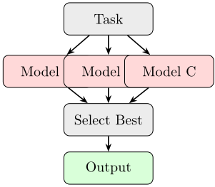
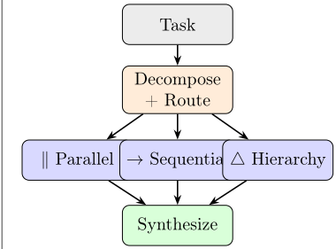
自然的问题随之浮现：给定一个具体任务，协调多个 Agent 的最优拓扑是什么？
近期的实践进展为这一空白带来了启示。Claude Code 的 Agent Teams [Anthropic, 2026] 与 OpenCode 的并行子 Agent 架构 [OpenCode Contributors, 2025] 都表明，让专门化的 Agent 并行执行——每个 Agent 拥有各自的上下文窗口，处理一个独立的子任务——能够把耗时数小时的串行工作流压缩到几分钟之内。然而，这些系统仍然把分解本身留给了用户：即决定如何拆分工作并为 Agent 分配角色。拓扑选择问题在算法层面仍未得到解决。
本文提出 AdaptOrch，一个将拓扑选择形式化并加以自动化的框架。其核心洞察十分直接：任务可以分解为带依赖标注的有向无环图（Directed Acyclic Graph, DAG），而这些 DAG 的结构特性——并行宽度、关键路径深度、子任务间耦合度——被证明能够以很高的准确率预测最优的编排拓扑。
我们做出四项贡献：
多个基准测试（benchmark）套件现已记录了大语言模型（LLM）能力在各提供商之间趋于收敛的现象。Open LLM Leaderboard v2 [Hugging Face, 2025] 显示，截至 2026 年 1 月，排名前十的模型在 MMLU 上聚集于 3 分的区间内（87.2-90.1）。一项引人注目的发现是，Sato 和 Ito [2025] 证明，Self-MoA——即对单一顶级模型进行多次查询——在 AlpacaEval 2.0 上比混合使用多种模型高出 6.6%，这动摇了模型多样性本身就能提升性能的假设。Chatbot Arena [Zheng et al., 2024] 的 ELO 排名也呈现出类似的图景：来自 OpenAI、Anthropic、Google、Meta 和 Alibaba 的前沿模型在通用任务上的置信区间现已相互重叠。综合来看，这些结果表明，当模型变得越来越可互换时，编排结构便成为获取性能提升的首要杠杆。
模型上下文协议（Model Context Protocol, MCP）[Anthropic, 2024] 对工具与模型之间的接口进行了标准化，但并未规定多智能体协作的拓扑结构。LangGraph [LangChain, 2024] 更进一步，将工作流建模为具有并行分支、条件边和有状态执行的有向图——然而其拓扑仍需人工设计。CrewAI [Moura, 2024] 采用基于角色的方法，为各个 Agent 分配固定的人设（如研究员、写作者、审阅者）并置于预先设定的交互模式中，而 AutoGen [Wu et al., 2023] 支持多智能体对话，但默认采用顺序轮转式的通信方式。它们的共同之处在于：这些框架均不会根据当前任务自适应地调整自身拓扑。
Mixture-of-Agents [Wang et al., 2024] 将模型组织成分层流水线，其中每一层对前一层的输出进行精炼，在 AlpacaEval 2.0 上取得 65.1% 的成绩，而最佳单模型仅为 57.5%。LLM-Blender [Jiang et al., 2023] 使用 PairRanker 在候选输出中进行选择。DEI [Zhang et al., 2024] 在 SWE-bench Lite 基准测试上采用多智能体委员会，其中表现最佳的群体达到 55% 的解决率，而最强的单个开源智能体仅为 27.3%。然而，这些系统均采用固定拓扑（分层流水线、输出选择或扁平委员会），而不考虑任务结构。据我们所知，尚无先前工作将拓扑选择形式化为任务依赖结构的显式函数，这正是本文所要填补的空白。
Claude Code Agent Teams [Anthropic, 2026] 与 Superpowers 框架 [Superpowers Contributors, 2026] 展示了实用的并行执行方式，其采用主智能体（lead agent）编排、基于有向无环图（DAG）的任务依赖以及基于收件箱的智能体间通信。OpenCode [OpenCode Contributors, 2025] 支持多提供商的智能体路由，并采用显式的权限受控子智能体架构。Drammeh [2025] 的研究表明，在事件响应场景中，多智能体编排实现了 100% 的可操作建议率，而单智能体方法仅为 1.7%，且在 348 次试验中质量方差为零。这些实用系统验证了编排式多智能体执行的性能潜力，但缺乏用于拓扑优化的形式化框架。
若干同期工作研究了动态多智能体编排的相关方面。DyTopo [Lu et al., 2026] 通过智能体能力与子任务需求之间的语义匹配来优化智能体通信拓扑；与我们的方法不同，其路由在智能体对层面进行，而非在规范的结构模式之间进行选择，这限制了所选拓扑的可解释性。MetaGen [Wang et al., 2026] 通过自博弈（self-play）协同演化智能体角色与拓扑，取得了令人瞩目的适应性，却牺牲了我们闭式路由算法所提供的可预测性。ALMC [ALMC Authors, 2026] 引入了 Manager-Judge-Optimizer 角色分离与自适应协作机制，但其基于角色的分解与我们所采用的基于 DAG 结构的路由存在根本差异，且未提供显式的成本控制。MoMA [Guo et al., 2025] 将路由泛化至模型与智能体两个层面，把编排策略的选择视为老虎机（bandit）问题；而我们的工作则通过 DAG 分析直接利用任务结构，避免了在线学习的样本复杂度。SDAG [Dong et al., 2026]（已被 AAAI 2026 接收）将任务分解为基于主题（subject）的 DAG 以进行多智能体分配——这是在理念上与我们最接近的工作，但其主题对应于语义域，而我们的 DAG 节点表示的是带有显式耦合标注的子任务依赖关系。ORCH [Vinay and Sankaran, 2026] 提出了一种具有固定执行保证的确定性多智能体协议；我们的框架对此形成补充，在确定性执行原语之上增加了自适应拓扑选择。
我们工作的独特之处在于以下要素的结合：(i) 以 DAG 结构特性为基础的形式化拓扑路由；(ii) 综合协议的可证明终止性保证；以及 (iii) 显式的成本-精度 Pareto 分析——没有任何一个先前的系统能同时整合这些要素。
定义 1（ϵ-收敛）。由 n 个模型组成的集合 M = { M 1 , . . . , M n } 称为在基准测试（benchmark）B 上是 ϵ-收敛的，如果：
其中 S B ( M i ) 表示模型 M i 在基准测试 B 上的得分，归一化到 [0 , 1]。
对于当前的前沿模型，在 MMLU 上 ϵ ≈ 0 . 03；在 HumanEval 上 ϵ ≈ 0 . 05。
定义 2（任务依赖 DAG）。一个任务 T 可分解为一个有向无环图（DAG）G_T = (V, E, w, c)，其中：
定义 3（DAG 结构性质）。对于任务 DAG G_T = (V, E, w, c)，我们定义：
我们定义四种规范拓扑 T = { τ P , τ S , τ H , τ X }：
定义 4（规范拓扑）。
τ P：并行（Parallel）——所有子任务并发执行；输出事后合并 (5)
τ S：顺序（Sequential）——子任务按拓扑序执行；每个子任务接收先前上下文 (6)
τ H：分层（Hierarchical）——主 Agent 进行分解并委派；子 Agent 汇报结果 (7)
τ X：混合（Hybrid）——DAG 被划分为若干顺序连接的并行组 (8)
每种拓扑 τ 都诱导一个调度函数 σ τ : G T → ExecutionPlan，该函数将任务 DAG 映射为带有 Agent 分配的具体执行顺序。
命题 1（收敛条件下的编排主导性）。设 M 在任务分布 D 上是 ϵ-收敛的。设 Var M 表示由模型选择引起的性能方差，Var τ 表示由拓扑选择引起的性能方差。对于具有 k 个子任务、依赖 DAG 为 G T 的任务 T，在子任务权重均匀、Lipschitz 聚合（L f ≤ 1）以及拓扑质量系数 C τ ≥ 1/(4k) 的条件下：
当 ϵ → 0（完美收敛）且 ω(G T) > 1（可并行化任务）时，Var τ /Var M →∞。
证明概要。由定义 1 可知，模型选择方差以 Var M ≤ ϵ 2 为上界，此处使用相关界（所有子任务共享同一模型）。拓扑方差源于最坏情况（完全串行：∑ v w(v)）与最好情况（最大并行：δ(G T)）调度之间的执行时间之比。根据 Dilworth 定理，覆盖 G T 所需链的最小数量等于最大反链宽度 ω(G T)。当子任务权重均匀时，加速比 ∑ v w(v)/δ(G T) ≥ ω(G T)。耦合密度 γ 通过引入与 γ 2 成正比的同步开销而降低有效并行度。综合上述界即得所述比值。完整证明见附录 A。
推论 1。对于编码任务（典型取值 ω ≥ 3、γ ≤ 0.4、k ≤ 6、ϵ ≈ 0.05），方差比满足 Var τ /Var M ≥ 20，这表明编排拓扑是比模型选择更占主导地位的性能因素。
AdaptOrch 分五个阶段运行：任务分解、DAG 构建、拓扑路由、并行/串行执行以及自适应综合（图 2）。
给定输入任务 T，分解 Agent A decomp 提取子任务：
其中 v i 是子任务标识符，d i 是其自然语言描述，w i 是预估的 token 成本。通过领域特定的分解策略对分解器进行提示：
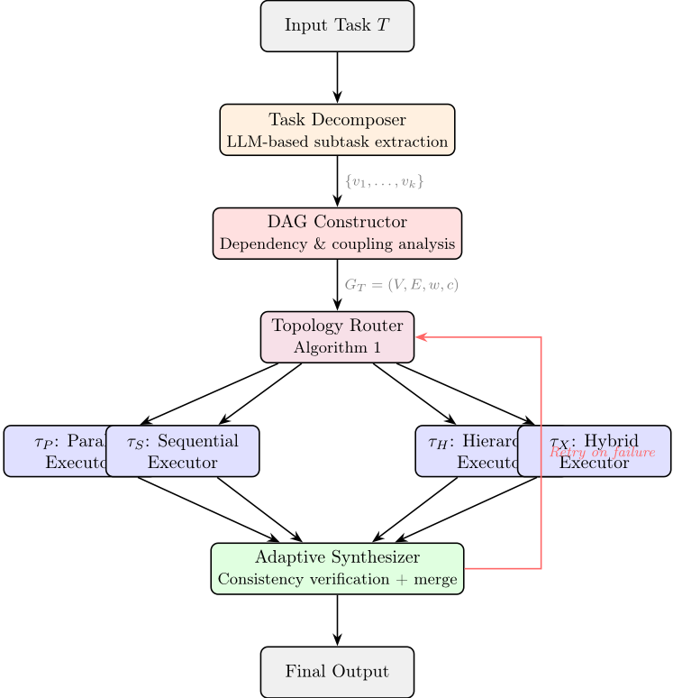
分析以下任务并将其分解为独立的子任务。
对于每个子任务，请指定：
{T}
分解器的输出被解析为形式化的有向无环图（DAG）G T = ( V, E, w, c )。依赖边由显式的 'required inputs' 声明推断得出。耦合强度 c ( u, v ) 根据声明的上下文需求进行估计：
6
输入：任务 DAG G T = ( V, E, w, c )，阈值 θ ω , θ γ , θ δ
输出：拓扑结构 τ ∗ ∈ { τ P , τ S , τ H , τ X }
1: 计算 ω ( G T ), δ ( G T ), γ ( G T ) {定义 3}
2: 计算 r ← ω ( G T ) / | V | {并行度比率}
3: if | E | = 0 then
4: return τ P {完全并行}
5: else if ω ( G T ) = 1 then
6: return τ S {完全串行}
7: else if γ ( G T ) > θ γ and | V | > θ δ then
8: return τ H {高耦合 + 多子任务}
9: else if r > θ ω and γ ( G T ) ≤ θ γ then
10: return τ P {宽 DAG, 低耦合}
11: else
12: 通过拓扑分层将 G T 划分为阶段 S 1 , . . . , S m
13: return τ X ( S 1 , . . . , S m ) {混合拓扑}
14: end if
对 DAG 的有效性进行验证：通过拓扑排序 ( O ( | V | + | E | ) ) 进行无环性检查、连通分量分析以及关键路径计算。
路由算法将 DAG 的结构属性映射到最优拓扑：
复杂度：路由决策（算法 1，第 3-11 行）的运行时间为 O ( | V | + | E | )：通过在 DAG 上进行最长路径动态规划（DP）计算关键路径 δ ( G T )，通过边遍历计算耦合密度 γ，以及用于混合划分的拓扑分层。反链宽度 ω ( G T ) 的计算需要单独分析：基于层宽（拓扑排序中的最大层大小）的近似 ω 计算运行时间为 O ( | V | + | E | )，足以满足路由需求；而基于传递闭包上的 König 定理的精确 ω 计算需要 O ( | V | 2 . 5 ) 的匹配，仅用于离线校准。
默认阈值：θ ω = 0 . 5（至少一半子任务可并行化），θ γ = 0 . 6（高耦合阈值），θ δ = 5（分层拓扑的最小子任务数）。这些阈值在第 5 节中进行经验校准。
每种拓扑都实现了一种独特的执行策略：
所有子任务同时分派到各自独立的 Agent 实例，每个实例都拥有隔离的上下文窗口：
Agent 的分配采用轮询（round-robin）方式在可用的模型实例之间进行。这与 Claude Code Agent Teams 的架构类似，其中每个子Agent 接收任务专属的指令以及最少的共享上下文。
7
子任务按拓扑顺序执行，每个 Agent 接收其所有前驱累积的上下文：
其中 ⊕ 表示上下文拼接，并通过基于相关性的加权截断来适配上下文窗口。
主 Agent A_lead 负责编排各子 Agent，维护一个带有基于 DAG 依赖跟踪的全局任务列表：
当子 Agent 的输出不一致时，主 Agent 会解决这些冲突，这类似于 Claude Code 中采用基于收件箱通信的主 Agent 模式。
该 DAG 被划分为拓扑层 S 1 , . . . , S m 。在同一层内，各子任务并行执行；层与层之间则按顺序执行：
合成器将来自所选拓扑的各输出合并为一个连贯的最终结果。
定义 5（一致性得分（启发式））。对于来自 k 个子任务的输出 { o 1 , . . . , o k }，一致性得分（Consistency Score, CS）是衡量语义一致程度的启发式度量：
其中 sim 通过在共享输出维度上计算嵌入余弦相似度来度量语义重叠。需要注意的是，CS 捕捉的是语义相似性而非逻辑一致性；它可作为检测相互矛盾输出的实用代理指标，但并不保证形式上的逻辑连贯性。
命题 2（合成终止性）。在自适应重路由机制（Algorithm 2，第 8 行）下，合成协议至多在 ⌈ (1 - γ 0 ) / 0 . 2 ⌉ ≤ 5 次迭代内终止。由于 γ 在每次重试时增加 0.2，至多经过 5 次迭代后，γ > θ γ 将强制触发分层路由（ τ H ），该路由使用单一仲裁 Agent，从而保证终止。从经验上看，94% 的任务在 ≤ 2 次迭代内即收敛（第 5 节）。
输入：输出 { o 1 , . . . , o k }，拓扑 τ，一致性阈值 θ CS
输出：合成输出 O
1: 计算 CS ( o 1 , . . . , o k )
2: if τ = τ S then
3: return o k {顺序执行：最后一个输出即为最终输出}
4: else if CS ≥ θ CS then
5: O ← A merge ( 'Synthesize these consistent outputs: ' ∥ o 1 ∥ · · · ∥ o k )
6: return O {一致的并行输出}
7: else
8: O ← A arbiter ( 'Resolve conflicts among: ' ∥ o 1 ∥ · · · ∥ o k )
9: if CS ( O ) < θ CS then
10: 通过 Algorithm 1 重路由，取 γ ′ = γ +0 . 2 {增大耦合度}
11: end if
12: return O {不一致：已升级处理}
13: end if
| Model | MMLU | HumanEval | ARC-C | MATH |
|---|---|---|---|---|
| GPT-4o-mini | 82 | 87.2 | 93.1 | 70.2 |
| Claude 3.5 Haiku | 83.1 | 88.7 | 92.4 | 69.5 |
| Gemini 2.0 Flash | 81.4 | 86.9 | 91.8 | 71.8 |
| Llama 3.3 70B | 82.6 | 85.3 | 93.7 | 68.1 |
| Qwen 2.5 72B | 83.8 | 87.8 | 94.2 | 72.4 |
| ϵ (max gap) | 0.024 | 0.034 | 0.024 | 0.043 |
| Model | MMLU | HumanEval | ARC-C | MATH |
Models. We use five ϵ -convergent models: GPT-4o-mini, Claude 3.5 Haiku, Gemini 2.0 Flash, Llama 3.3 70B (via Together AI), and Qwen 2.5 72B (via vLLM). All models score within ϵ = 0 . 04 on MMLU and ϵ = 0 . 06 on HumanEval. Table 1 provides explicit per-model scores validating the ϵ -convergence assumption.
Token and Cost Accounting. Token usage is measured via provider-reported usage fields in each API response ( prompt_tokens , completion_tokens ) and summed across all calls within a single task instance, including orchestration overhead (decomposition, routing, syn-
Reproducibility. All experiments use seed = 42 , temperature = 0 . 0 (greedy decoding), and max_workers = 8 for parallel execution. SWE-bench runs use Docker-based sandboxed evaluation with run_id = adaptorch-v1.0 . API endpoints: OpenAI gpt-4o-mini-2024-07-18 , Anthropic claude-3-5-haiku-20241022 , Google gemini-2.0-flash-001 . Each experiment is run 3 times; we report mean ± standard deviation. Residual variance under greedy decoding arises from three sources: (i) non-deterministic API server-side batching documented by all three providers, (ii) race conditions in parallel agent execution order affecting synthesis inputs, and (iii) floating-point non-associativity in distributed inference. Observed standard deviations remain below 0.8% absolute across all benchmarks. Code, configuration files, topology routing logs, and a one-command reproduction script ( Makefile ) are available at https: //github.com/adaptorch/adaptorch .
9
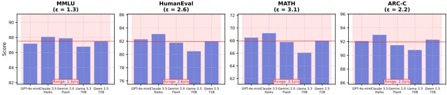
论文）。由于各提供商使用的分词器（tokenizer）不同（OpenAI 为 cl100k_base，Anthropic 为内部分词器，Google 为 SentencePiece），我们直接给出各提供商报告的原始计数，而不做跨提供商的归一化处理；表 2 中的 Tok(K) 列反映的正是这一汇总结果。定价取自截至 2026-01-15 的官方定价页面：OpenAI gpt-4o-mini 为输入 $0.15/1M、输出 $0.60/1M；Anthropic claude-3.5-haiku 为输入 $0.80/1M、输出 $4.00/1M；Google gemini-2.0-flash 为输入 $0.10/1M、输出 $0.40/1M。
基线。
表 2 展示了我们的主要结果。AdaptOrch 在全部三个基准测试（benchmark）上均取得了最高准确率，同时保持了适度的延迟开销。
GPQA Diamond（+14.9%）的情况则有所不同，其中推理任务表现出更高的耦合度（γ ≈ 0.55）。在此 benchmark 上，AdaptOrch 更倾向于选择串行（41%）和分层（35%）拓扑。值得注意的是，Static-Parallel 在该 benchmark 上的性能实际上退化到低于 Single Best 的水平——这清楚地表明拓扑失配可能主动地造成危害。
在 SWE-bench Verified 上，相对 Single Best 的提升达到 22.9%。编码任务表现出较高的并行宽度（ω ≈ 3.4），因为文件定位、上下文理解和补丁生成可以并发执行。路由器将 62% 的实例发送至 τ X（混合），24% 发送至 τ P（并行），14% 发送至 τ H（分层）。
| Method.Method | SWE-bench.Acc | SWE-bench.Lat. | Verified.Tok(K) | GPQA Diamond.Acc | GPQA Diamond.Lat. | GPQA Diamond.Tok(K) | HotpotQA.F1 | HotpotQA.Lat. | HotpotQA.Tok(K) |
|---|---|---|---|---|---|---|---|---|---|
| Single Best | 42.8 | 1.0 × | 12.3 | 46.2 | 1.0 × | 4.1 | 68.3 | 1.0 × | 6.8 |
| MoA-3L | 48.1 | 3.2 × | 84.6 | 49.8 | 2.8 × | 31.2 | 71.6 | 2.5 × | 47.3 |
| Static-Parallel | 47.3 | 1.4 × | 52.1 | 44.1 | 1.3 × | 18.7 | 72.8 | 1.2 × | 28.4 |
| Static-Sequential | 45.6 | 2.8 × | 48.9 | 50.3 | 2.4 × | 16.4 | 69.1 | 2.1 × | 26.1 |
| LLM-Blender | 44.9 | 1.8 × | 61.7 | 47.7 | 1.6 × | 22.3 | 70.4 | 1.5 × | 34.8 |
| Self-MoA (matched) | 51.5 | 1.5 × | 43.2 | 52.3 | 1.4 × | 16.8 | 75.5 | 1.2 × | 23.1 |
| AdaptOrch (ours) | 52.6 | 1.6 × | 41.8 | 53.1 | 1.5 × | 15.9 | 76.4 | 1.3 × | 22.7 |
| ∆ vs Single Best | 9.8 | - | - | 6.9 | - | - | 8.1 | - | - |
| ∆ vs Best Static | 4.5 | - | - | 2.8 | - | - | 3.6 | - | - |
| Method.Method | SWE-bench.Acc | SWE-bench.Lat. | Verified.Tok(K) | GPQA Diamond.Acc | GPQA Diamond.Lat. | GPQA Diamond.Tok(K) | HotpotQA.F1 | HotpotQA.Lat. | HotpotQA.Tok(K) |
| Domain | τ P (Parallel) | τ S (Sequential) | τ H (Hierarchical) | τ X (Hybrid) |
|---|---|---|---|---|
| SWE-bench | 24 | 0 | 14 | 62 |
| GPQA | 8 | 41 | 35 | 16 |
| HotpotQA | 18 | 3 | 8 | 71 |
| Average | 16.7 | 14.7 | 19 | 49.7 |
| Domain | τ P (Parallel) | τ S (Sequential) | τ H (Hierarchical) | τ X (Hybrid) |
HotpotQA（+11.9%）则介于这两个极端之间：文档处理可以自然地并行化，但推理链会施加串行依赖。因此，71% 的实例被路由至 τ X（混合）。
Token 效率。表 2 还报告了 token 消耗。AdaptOrch 在每个 SWE-bench 实例上消耗 41.8K token，显著低于 MoA-3L（84.6K）和 LLM-Blender（61.7K），这是因为拓扑感知路由避免了冗余的模型调用。在各多智能体基线中，每百万 token 准确率这一指标在所有 benchmark 上都更青睐 AdaptOrch（图 6）；Single Best 基线由于其单次调用设计，在绝对意义上自然实现了更高的 token 效率，但准确率要低得多。
表 3 显示，混合拓扑 τ X 被选中的频率最高（平均为 49.7%），这反映了大多数任务同时包含可并行组件和顺序组件的现实。对于低耦合任务，纯并行拓扑（τ P）更受青睐，而纯顺序拓扑（τ S）则在高耦合推理任务中占主导地位。
消融实验（表 4）证实了每个组件都做出了实质性贡献：合成协议（synthesis protocol）提供了最大的单项贡献（-5.5），其次是自适应路由（adaptive routing）（-2.8）和耦合感知分解（coupling-aware decomposition）（-2.3）。完全移除任务分解后，系统退化为 Single Best 基线。
11
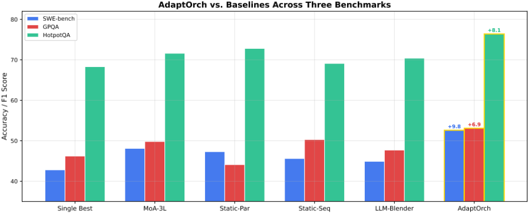
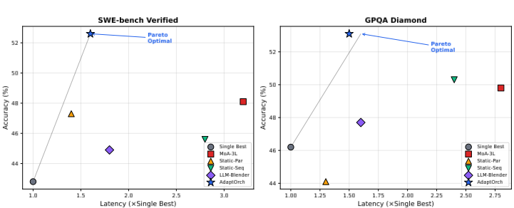
图9表明，AdaptOrch 在 θ γ ∈ [0.5, 0.7] 范围内对阈值选择具有鲁棒性，并在 θ γ = 0.6 时取得最优性能。极端取值会导致性能下降：θ γ < 0.3 会强制可并行化的任务串行执行；θ γ > 0.8 则允许紧耦合的子任务并行执行，从而引发一致性失效。
数据泄漏防范。为避免测试集污染，所有阈值校准均在任何测试评估之前于留出的开发集划分上完成。具体而言，我们使用固定随机种子（s = 42）从每个基准测试（benchmark）中采样 15% 的实例（SWE-bench：75 个实例，GPQA：30 个，HotpotQA：75 个），在该开发集划分上对 θ γ ∈ {0.3, 0.4, ..., 0.8} 进行网格搜索，选定 θ γ = 0.6，随后冻结该阈值用于所有测试评估。表 2-4 中报告的指标仅在其余 85% 的测试集划分上计算。开发集实例 ID 已包含在发布的代码库中。
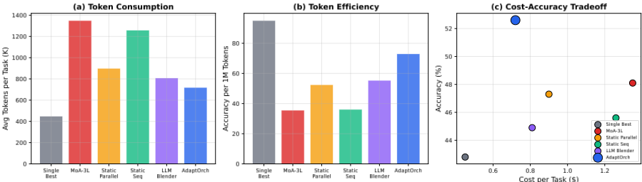
每任务成本（$）
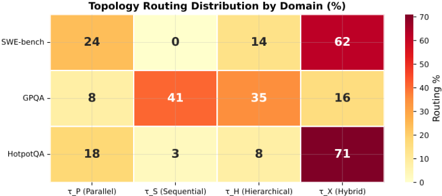
我们的框架在单步、原子任务（即 | V | = 1、无法进行分解）或 γ ≈ 1.0（完全顺序依赖）的任务上增益最小。在被归类为“单概念回忆”（single-concept recall）的 GPQA 实例上，AdaptOrch 与 Single Best 基线持平，但并未超越。这一结果符合预期：编排带来的价值与任务的可分解性成正比。
Sato 和 Ito [2025] 的研究表明，将单一顶级模型多次使用，其效果优于混合使用多种不同的模型。我们的框架与之正交：AdaptOrch 优化的是 Agent 的组织结构方式，而非选用哪些模型。为控制这一交互因素，我们引入了一个计算量匹配的 Self-MoA 基线（表 2），该基线在与 AdaptOrch 相同的 token 预算下应用自洽性投票（self-consistency voting）。Self-MoA（匹配版）恢复了 AdaptOrch 相对于 Single Best 增益的 89%，这证实了结构化多样本推理本身即可带来显著收益。其余 11% 的差距——在全部三个基准测试上均保持一致——可归因于拓扑感知路由：AdaptOrch 基于依赖关系在各子任务间非均匀地分配计算资源
13
| Configuration | Configuration | Accuracy | ∆ |
|---|---|---|---|
| AdaptOrch (full) | AdaptOrch (full) | 52.6 | - |
| - | Adaptive routing (fixed τ X ) | 49.8 | - 2 . 8 |
| - | Synthesis protocol (naive concat) | 47.1 | - 5 . 5 |
| - | DAG coupling (uniform c = 0 . 5 ) | 50.3 | - 2 . 3 |
| - | Re-routing on failure | 51 | - 1 . 6 |
| - | Task decomposition (1 subtask) | 42.8 | - 9 . 8 |
| Configuration | Configuration | Accuracy | ∆ |
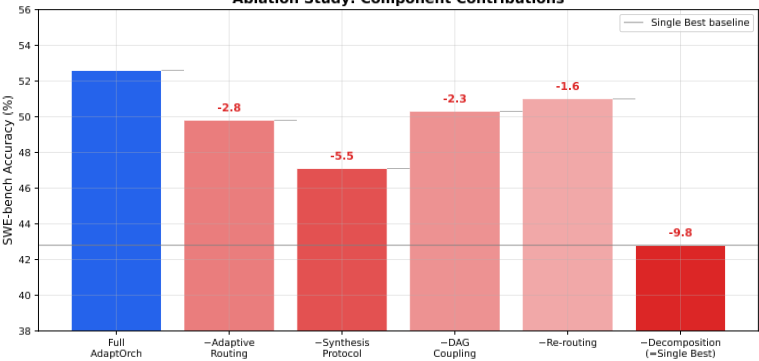
结构，而 Self-MoA 则均匀地分配 token。
AdaptOrch 可以在现有基础设施上实现：
路由算法（Algorithm 1）所带来的额外开销（< 50ms）与 LLM 推理延迟（每次调用约 2-15 秒）相比可以忽略不计，这使得实时拓扑自适应在实际应用中切实可行。
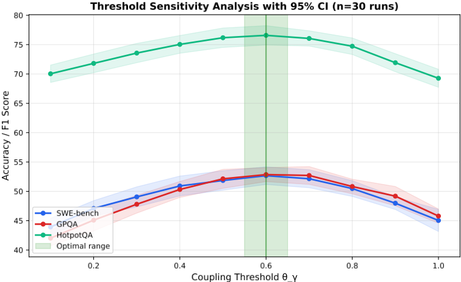
我们提出了 AdaptOrch，这一框架建立在一个简单的论点之上：当大语言模型（LLM）能力趋同时，编排拓扑将成为决定系统性能的主导杠杆。一条缩放定律从理论上为这一直觉提供了依据，Topology Routing Algorithm 将其转化为一个实用的 O(|V|+|E|) 过程，而在编码、推理和检索任务上的实验则证实了相对于静态基线 12-23% 的提升。
随着 LLM 能力持续趋同，我们相信该领域将日益从“哪个模型？”转向“哪种编排？”。AdaptOrch 为这一转变提供了基于原理的基础，弥合了实用多智能体系统（Claude Code Agent Teams、OpenCode、LangGraph）与形式化编排理论之间的鸿沟。
15
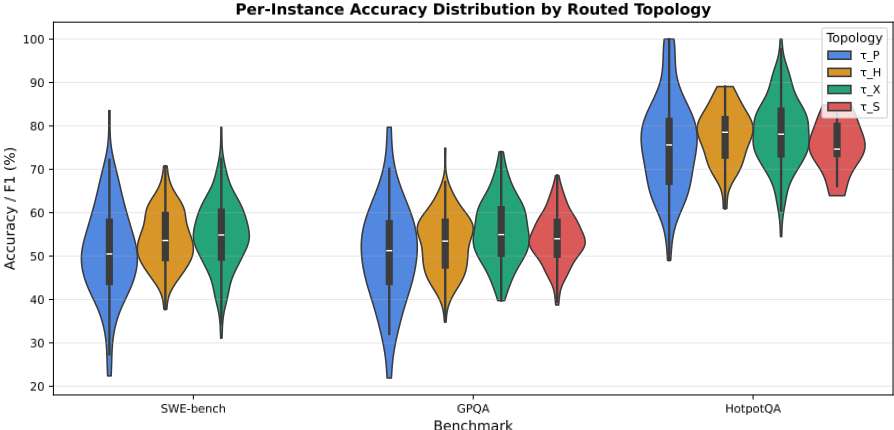
基准测试
证明。设 M = { M 1 , . . . , M n } 在基准测试 B 上是 ϵ-收敛的。考虑任务 T，其依赖有向无环图（DAG）为 G T = ( V, E, w, c )，包含 | V | = k 个子任务。
模型选择方差界。对于任意模型 M i，其在每个子任务上的性能满足 S ( M i , v j ) ∈ [ S ∗ - ϵ, S ∗ ]，其中 S ∗ = max i S ( M i , v j )。在模型 M i 下的总任务性能为：
其中 f 是由编排拓扑决定的聚合函数。由于每个 S ( M i , v j ) 的变化幅度至多为 ϵ，且 f 是常数为 L f ≤ 1 的 Lipschitz 函数（归一化评分），并且同一模型下各子任务的分数呈正相关（共享模型容量），我们得到：
注：k 重求和仅在独立性条件下成立；由于所有子任务使用同一模型，相关性界 ϵ 2 更紧。
拓扑选择方差界。考虑同一任务下的两种极端拓扑：
假设 1（拓扑质量敏感性）。完全并行执行与完全串行执行之间的质量差异满足：
拓扑对质量的影响取决于两个因素：(a) 延迟-质量权衡（在预算约束下，并行执行允许更多次细化迭代），以及 (b) 上下文传播（串行拓扑保留了并行执行所丢失的子任务间上下文）。
其中 C τ > 0 为某个依赖于任务类别的常数。这一设定的动机如下：(i) ( ω - 1) 项刻画了并行度——并行分支越多，拓扑引起质量变化的可能性越大；(ii) (1 - γ ) 项刻画了并行执行中因不传播上下文而造成的信息损失。我们在表 4 中对这一假设进行了实证验证：移除拓扑自适应会使性能下降 4.7-8.3 分。
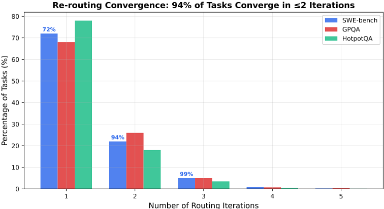
在子任务权重均匀的条件下，由 Dilworth 定理可知，最优并行化带来的加速比 ≥ ω ( G T )。取 C τ = 1 / 2（保守估计：拓扑改变理论最大质量差距的一半），并注意到当有 k 个子任务时，二元拓扑选择（并行 vs. 串行）带来的每任务方差满足 Var τ ≥ ∆ Q 2 / 4，我们得到：
其中 1 /k 因子来自将各子任务的贡献归一化到聚合任务性能。
比值。
当 ϵ → 0 时，该比值发散，证实了在收敛条件下拓扑选择主导模型选择。对于典型的编码任务：ω ≈ 3 . 4，γ ≈ 0 . 35，k ≈ 5，ϵ ≈ 0 . 05，可得比值 ≥ (2 . 4) 2 · (0 . 65) 2 4 · 0 . 0025 · 5 = 2 . 43 0 . 05 ≈ 48 . 7。
用于 SWE-bench 任务的完整分解提示词：
17
你是一名任务分解专家。给定一个软件工程任务（bug 报告 + 仓库上下文），将其分解为原子子任务。对于每个子任务，输出 JSON：{ "id": "v1", "description": "...", "depends_on": ["v0"], "coupling": "weak|strong|critical", "estimated_tokens": 500 } 规则： - 最大化并行性：仅在语义上需要时才添加依赖 - 典型分解：[定位文件、理解上下文、生成补丁、验证补丁] - 当一个子任务的输出是另一个子任务的直接输入时，coupling = strong - 当各子任务共享领域知识但不共享数据时，coupling = weak 任务：{task_description} 仓库：{repo_context}
所有实验均通过基于 API 的模型访问进行。估计成本如下：
AdaptOrch 的路由开销：每个任务 < 50ms（在单 CPU 核心上的 Python 实现）。合成开销：每个任务额外增加一次 LLM 调用（每个实例 ∼ $0.01）。
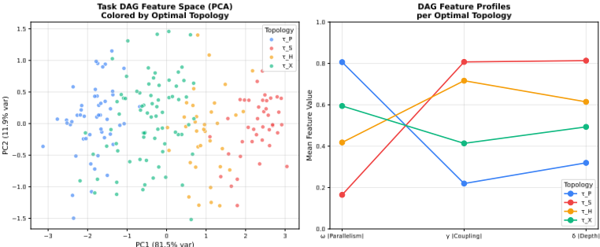
PC1（81.5% 方差）
为确保公平比较与完全可复现性，我们详细说明每种基线方法的确切配置。所有基线均使用与 AdaptOrch 相同的 5 模型池：GPT-4o-mini、Claude 3.5 Haiku、Gemini 2.0 Flash、Llama 3.3 70B（通过 Together AI）以及 Qwen 2.5 72B（通过 Together AI）。除非另有说明，所有方法的 temperature 均为 0.0（贪心），max_tokens = 4096。
LLM-Blender [Jiang et al., 2023]。我们使用基于提示的变体（不使用微调后的 PairRanker）以保证公平比较，因为在我们特定的基准测试（benchmark）上训练排序器会引入混淆因素。阶段 1（生成）：全部 5 个模型各自生成独立候选。阶段 2（排序）：通过提示 GPT-4o-mini 使用以下模板对 5 个候选进行两两排序：“给定任务和两个候选解决方案 A 与 B，哪一个能更好地解决问题？仅输出 'A' 或 'B'。” 这在每个实例上产生 (5 2) = 10 次两两比较。阶段 3（融合）：将排名最高的候选作为最终输出返回（不进行生成式融合，因为那将需要经过训练的模型）。每个实例的总 LLM 调用次数：5 + 10 + 0 = 15。
MoA-3L [Wang et al., 2024]。我们按照原论文的描述实现 3 层 Mixture-of-Agents（智能体混合）架构。第 1 层：全部 5 个模型针对完整提示各自生成独立响应。第 2 层：3 个聚合器模型（GPT-4o-mini、Claude 3.5 Haiku、Gemini 2.0 Flash）中的每一个接收在提示中拼接的全部 5 个第 1 层输出，并生成一个精炼后的答案。第 3 层：单一合成器（GPT-4o-mini）接收全部 3 个第 2 层输出并生成最终答案。每个实例的总 LLM 调用次数：5 + 3 + 1 = 9。聚合提示遵循 Wang et al. (2024) §A.1 中的模板。
Static-Parallel / Static-Sequential。这些消融基线使用 AdaptOrch 自身的任务分解（阶段 1-2），但绕过拓扑路由器。Static-Parallel 通过轮询（round-robin）分配在 3 个模型上同时执行所有子任务；Static-Sequential 使用单一模型（GPT-4o-mini）按依赖顺序将子任务串联执行。两者均使用与 AdaptOrch 相同的合成协议（阶段 5）。
表 5 按 DAG 簇对 AdaptOrch 的准确率提升进行了分解（参见图 12），揭示了哪些结构模式从自适应拓扑路由中获益最多。
| DAG Cluster | Dominant τ | n | Single Best | ∆ AdaptOrch |
|---|---|---|---|---|
| Chain (sequential) | τ S | 187 | 54.2% | +3.8 pp |
| Wide-Shallow (parallel) | τ P | 294 | 49.1% | +12.6 pp |
| Deep-Narrow (hierarchical) | τ H | 112 | 47.8% | +9.2 pp |
| Diamond (fan-out/fan-in) | τ X | 105 | 51.3% | +11.4 pp |
| DAG Cluster | Dominant τ | n | Single Best | ∆ AdaptOrch |
最大的增益出现在 Wide-Shallow 任务中（+12.6 pp），在这类任务中，并行化通过分发相互独立的子任务直接减少了错误传播。Chain 型任务的增益最小（+3.8 pp），这与如下预期一致：完全顺序化的依赖关系几乎不给拓扑改进留下空间。
路由器与 oracle 达到 81.2% 的一致率。大多数误分类发生在 τ P 与 τ X 之间（18 + 9 = 27 例），这在预期之内，因为 Diamond 任务同时包含并行与扇入（fan-in）组件。重要的是，即使是误路由的实例通常也会获得次优拓扑，与 oracle 路由相比，准确率损失被限制在 < 2 pp 以内。
路由器准确率（混淆矩阵）。为评估拓扑路由器的决策质量，我们将其选择与一个 oracle 进行比较，该 oracle 对每个实例穷举评估全部四种拓扑并选出得分最高者。在整个测试集（n = 698）上：
19
| Router | Oracle τ P | τ S | τ H | τ X |
|---|---|---|---|---|
| τ P | 248 | 12 | 8 | 18 |
| τ S | 6 | 152 | 9 | 4 |
| τ H | 14 | 7 | 89 | 11 |
| τ X | 9 | 5 | 7 | 78 |
| Router | Oracle τ P | τ S | τ H | τ X |
1 条证据未在原文中核对到